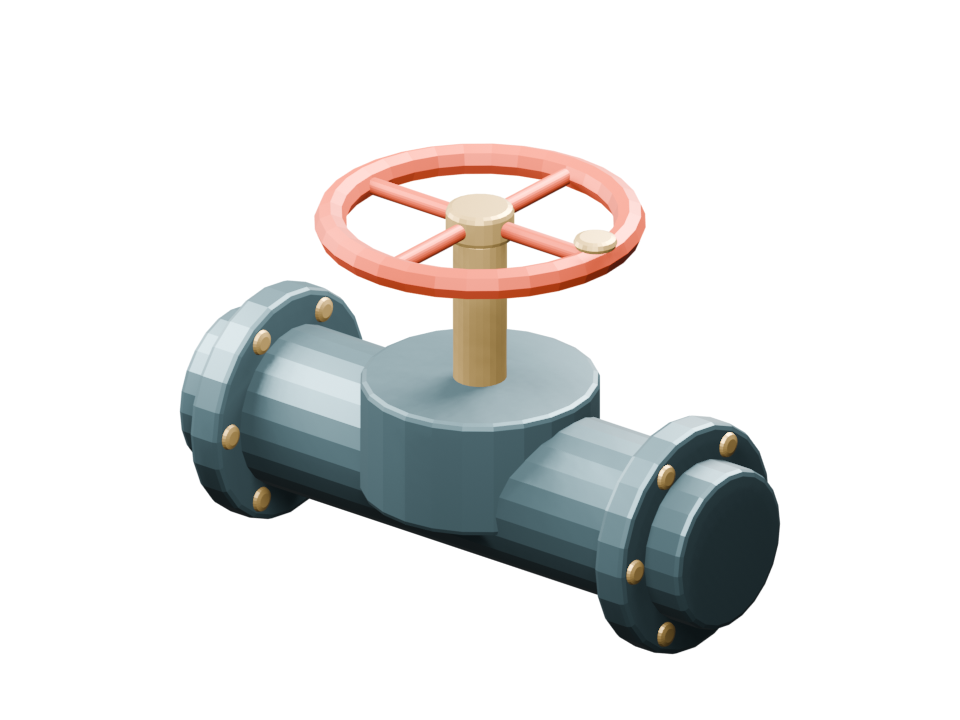

バルブを回す。
3Dを、ゲームの手触りに。
立体の部品を眺めるだけでなく、回して状態を変えてみましょう。Blenderで制作したバルブを、ブラウザーで動く小さなゲームにしました。

3Dモデルを読み込んでいます…
MISSION 01 / 水路の開通
四分の一回転を、3回。
赤いハンドルを3回回すと、水路が開きます。視点を変えて、配管とハンドルのつながりも確かめてください。
準備中。モデルが表示されたら始められます。
音は鳴りません。進捗はこの画面内だけに保持します。描画に対応しない環境では静止画で操作を体験できます。
この部品は、どう作った？
- Blenderは立体の形や材質を制作するソフトです。この配管・ハンドルは基本図形を組み合わせたオリジナルです。
- MCPはAIと外部ツールをつなぐ共通の仕組みです。今回のモデルは、MCPを経由したBlenderの操作で生成しました。
- GLBは形・材質をまとめて運べる3Dファイルです。ブラウザーはこのGLBを読み込み、ハンドル部分だけを回しています。
この画面は、事前に生成したモデルを使う実習です。閲覧者の端末でBlenderやMCPサーバーが起動することはありません。